Top Masteries
 By
MrOwnership
By
MrOwnership
Contents
Intro
We are going to take a look at another metric for greatness, Mastery Awards. Mastery awards are given to users when they complete every achievement for a given set in hardcore mode. Users wear mastery awards as a badge of honor on their profile page representing all the hard work they put into truly becoming a master of the game.
Below we will take a look at which users rank among the best with the most mastery awards in several categories well as notable updates from the previous month to each individual category. Check to see how you rank among the rest of the community members.
Special thanks to  Nydaxn for creating the ranking images. Ranks have now been updated to show ties.
Nydaxn for creating the ranking images. Ranks have now been updated to show ties.
Current Champions
|
|
|
Mastery Awards |
|---|---|---|
| Total Awards |  MaxMilyin MaxMilyin |
573 |
| Arcade |  DUT DUT |
47 |
| Atari 2600 |  PMniac PMniac |
81 |
| Game Boy |  Shootzy Shootzy |
108 |
| Game Boy Advance |  bonecrusher1022 bonecrusher1022 |
110 |
| Game Boy Color |  Bendyhuman Bendyhuman |
43 |
| Game Gear | Nydaxn |
27 |
| Hack Champ |  HolyShinx HolyShinx |
170 |
| Homebrew Champ | Bendyhuman |
72 |
| Master System |  Jungon Jungon |
48 |
| Mega Drive | DUT |
99 |
| MSX |  Blazekickn Blazekickn |
5 |
| N64 |  Aquator Aquator |
33 |
| NES |  SanMarino SanMarino |
229 |
| Nintendo DS |
Bendyhuman,  ShadwSonic ShadwSonic
|
26 |
| PC Engine |  Infernum Infernum |
20 |
| PC-8000/8800 |  malasdair malasdair |
8 |
| PlayStation |  Alexxi Alexxi |
73 |
| PlayStation Portable |  minibt minibt |
9 |
| Pokémon Mini |
 guineu, guineu,  Nevermond12 Nevermond12
|
10 |
| Saturn |  Boldewin Boldewin |
10 |
| SNES |  danibodom danibodom |
138 |
| Virtual Boy |
 Grahamtams, MaxMilyin, Grahamtams, MaxMilyin,  Wendigo Wendigo
|
3 |
| Watara Supervision |  Sarconius Sarconius |
41 |
Category Rankings
Total Awards
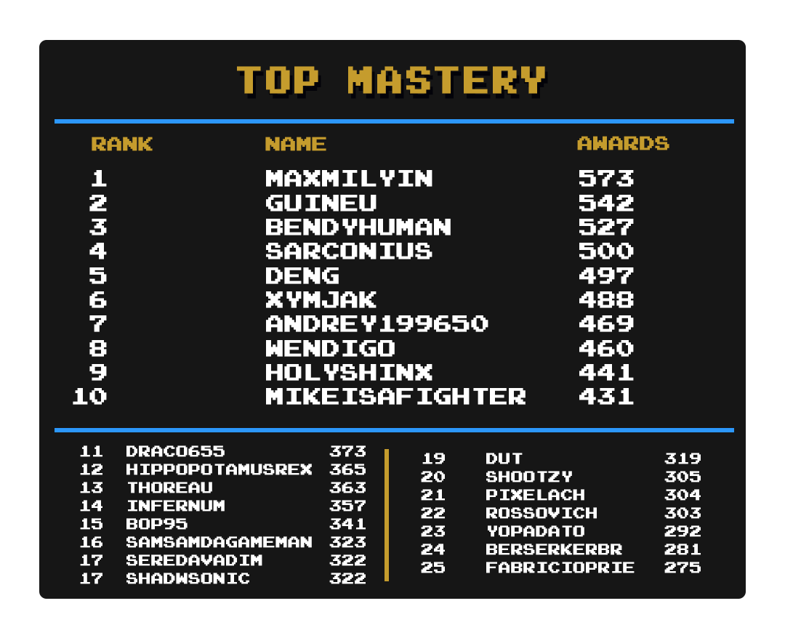
-
MaxMilyin has continues to reign supreme with now 573 total mastery awards.
-
guineu is closing in on that 1st place spot with 33 new mastery awards this month.
-
Infernum and ShadwSonic have both jumped up multiple spots with 39 and 31 new mastery awards this month.
Notable Milestones
- Congratulations to Sarconius for reaching over 500 mastery awards.
- Congratulations to ShadwSonic, Shootzy, and
 Pixelach for reaching over 300 mastery awards.
Pixelach for reaching over 300 mastery awards. - Congratulations to
 Wiiner,
Wiiner,  freezestar,
freezestar,  Nightstorm, and
Nightstorm, and  TheJewker for reaching over 200 mastery awards.
TheJewker for reaching over 200 mastery awards.
Arcade
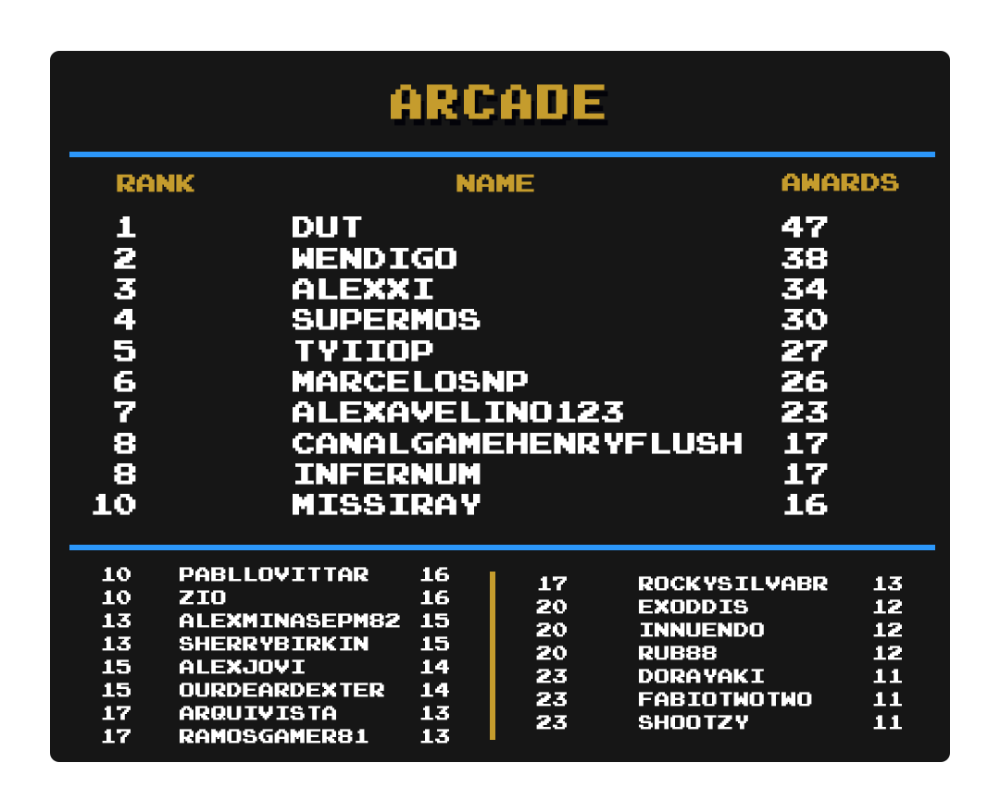
- Top 5 has gone unchanged with no new mastery wards this month, DUT continues to hold the top spot.
-
 missiray and
missiray and  Zio have both jumped into a 3-way tie for 10th place with 4 new mastery awards this month.
Zio have both jumped into a 3-way tie for 10th place with 4 new mastery awards this month. -
 dorayaki has made it into the top 25 and is tied in 23rd place.
dorayaki has made it into the top 25 and is tied in 23rd place.
Atari 2600
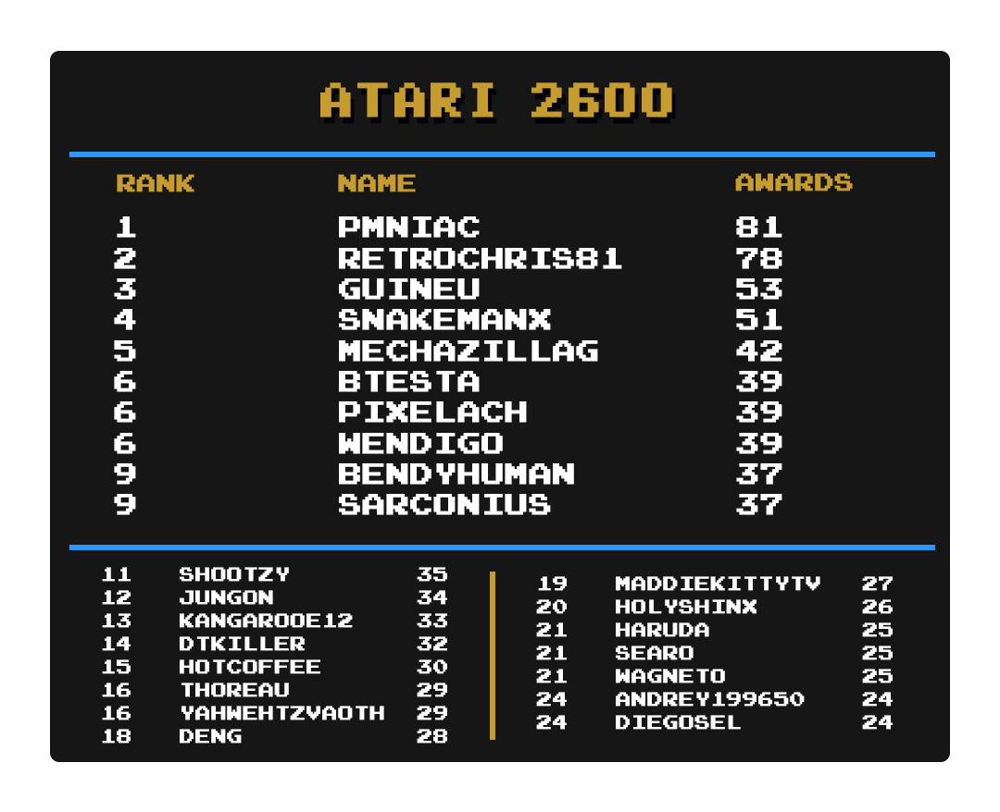
-
PMniac has taken over the top spot with 8 new mastery awards this month.
-
guineu has jumped into 3rd place with 4 new mastery awards this month.
Game Boy
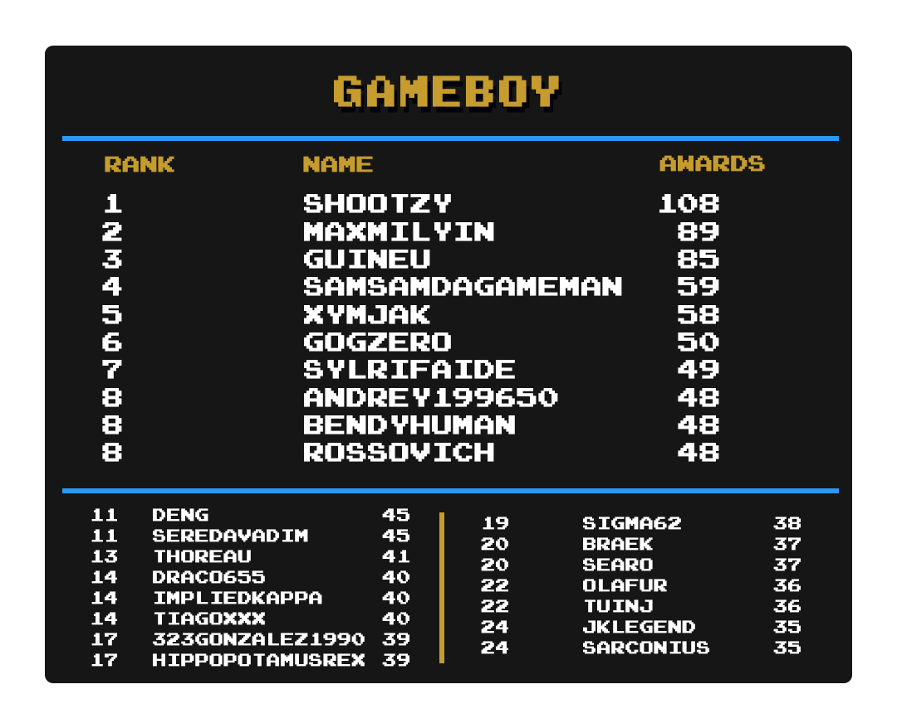
-
Shootzy, MaxMilyin, and guineu are all going strong in this category with 108, 89, and 85 mastery awards. The rest of the competition are far behind with less than 60.
Game Boy Advance
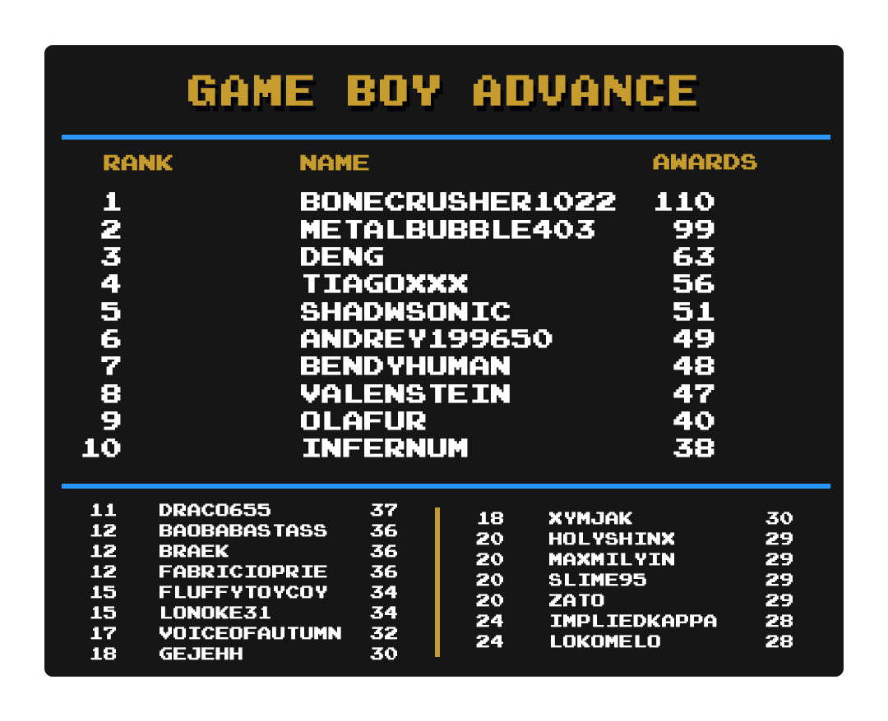
-
bonecrusher1022 continues to hold the lead in this category.
-
 metalbubble403 is 1 award from reaching 100 Game Boy Advance mastery awards.
metalbubble403 is 1 award from reaching 100 Game Boy Advance mastery awards. -
 Lokomelo has made it into the top 25 and is tied in 24th with 28 mastery awards.
Lokomelo has made it into the top 25 and is tied in 24th with 28 mastery awards.
Game Boy Color
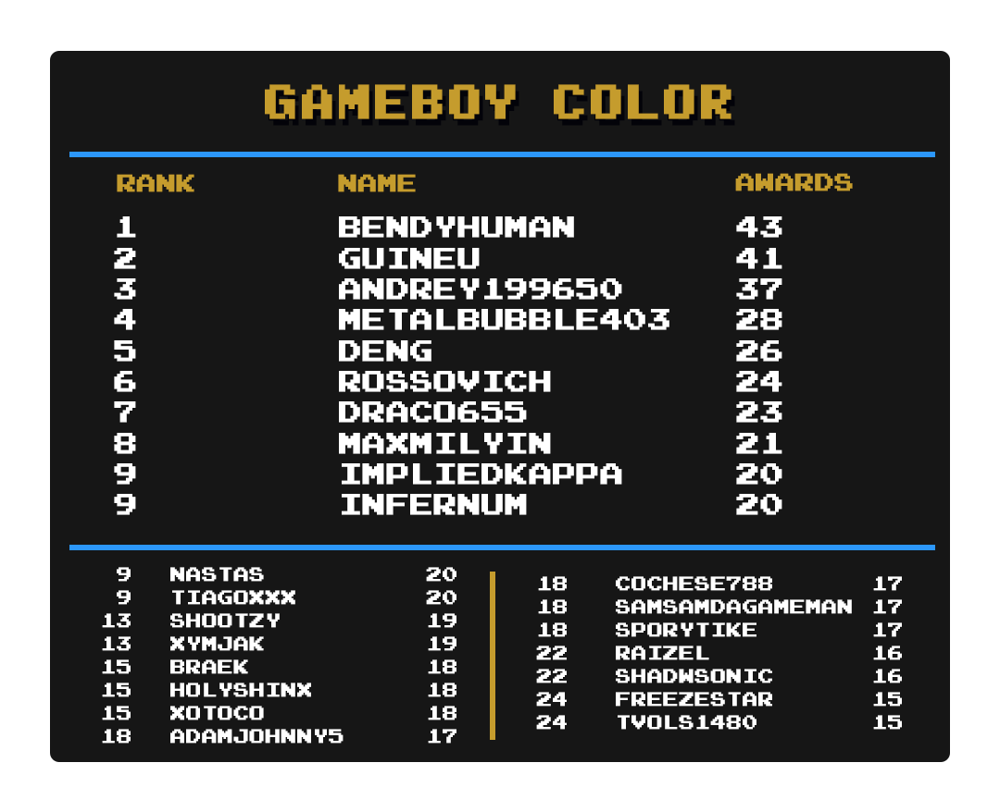
-
Bendyhuman is still in first place, but guineu is closing the gap.
-
Infernum and
 Nastas both had 2 new mastery awards this month and are now in a 4-way tie for 9th place with
Nastas both had 2 new mastery awards this month and are now in a 4-way tie for 9th place with  ImpliedKappa and
ImpliedKappa and  Tiagoxxx.
Tiagoxxx. -
 adamjohnny5 has made it into the top 25 is tied in 18th place.
adamjohnny5 has made it into the top 25 is tied in 18th place.
Game Gear
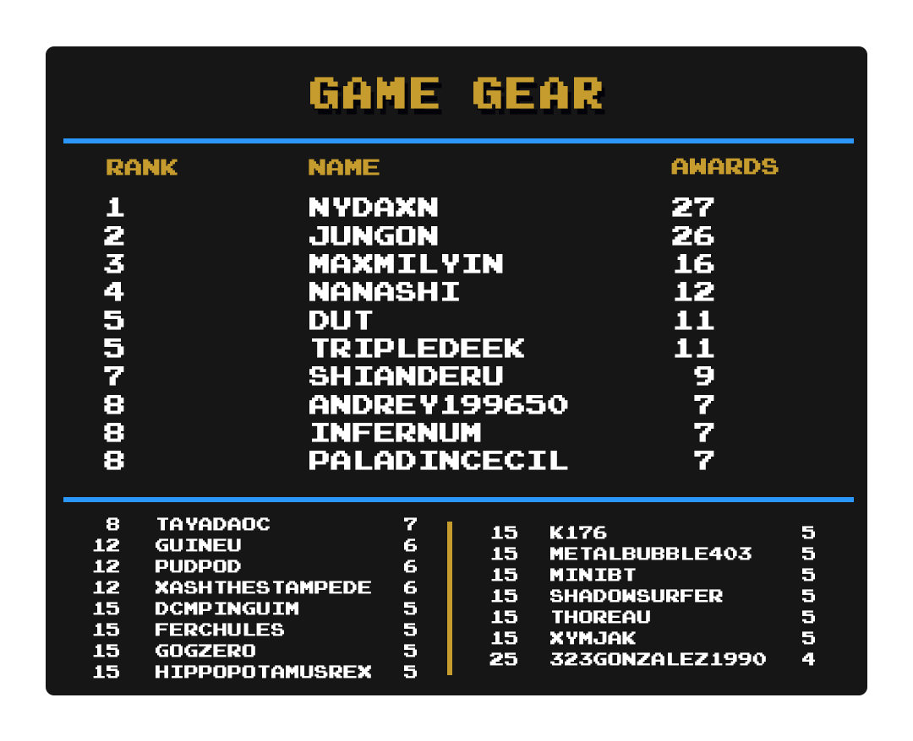
-
Nydaxn has taken over the 1st place spot with 13 new mastery awards this month.
-
Infernum has made it into the top 25 and is in a 4-way tie for 8th place.
-
 dcmpinguim and minibt have made it into the top 25 and are in a 10-way tie for 15th place.
dcmpinguim and minibt have made it into the top 25 and are in a 10-way tie for 15th place.
Hack Champ

-
HolyShinx is in 1st place by a wide margin of 51 mastery awards over the 2nd place Blazekickn.
-
 Draco655 and Bendyhuman have both broke the 100 mastery awards mark.
Draco655 and Bendyhuman have both broke the 100 mastery awards mark. -
 domenyX has made it into the top 25 and is sitting at 25th place.
domenyX has made it into the top 25 and is sitting at 25th place.
Homebrew Champ
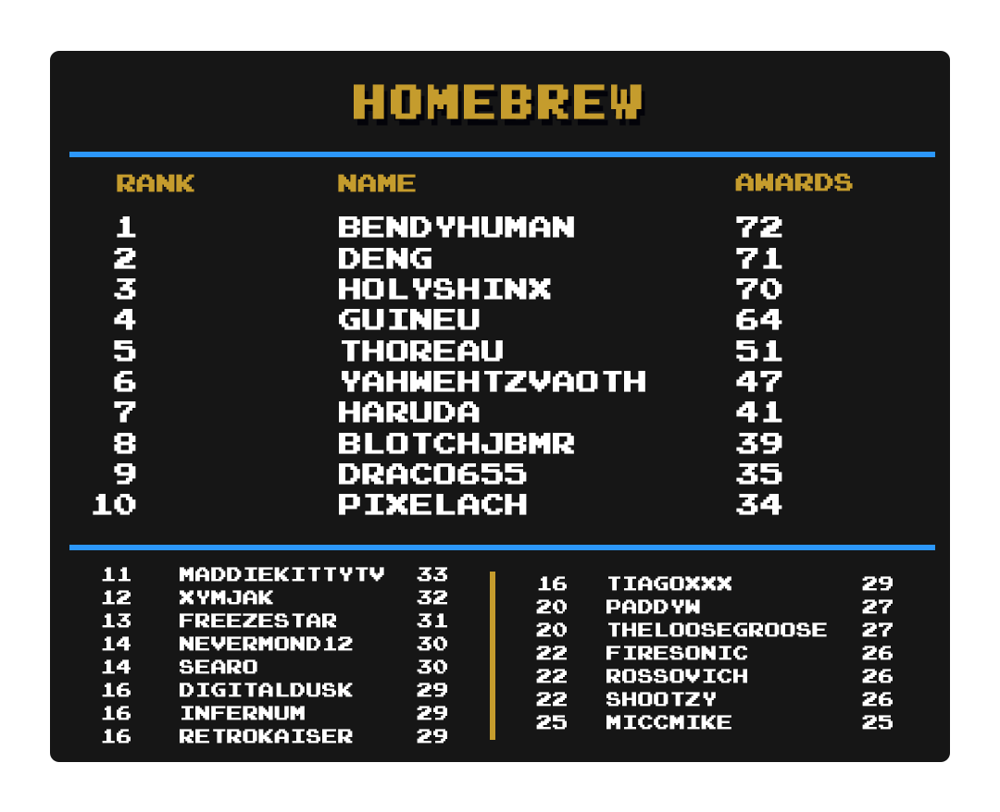
-
Bendyhuman is in danger of losing that top spot. Blazekickn and HolyShinx are only an award or two away from reaching the top spot.
-
Shootzy has made it into the top 25 and is tied in 22nd place.
-
 miccmike has made it into the top 25 and is sitting at 25th place.
miccmike has made it into the top 25 and is sitting at 25th place.
Master System
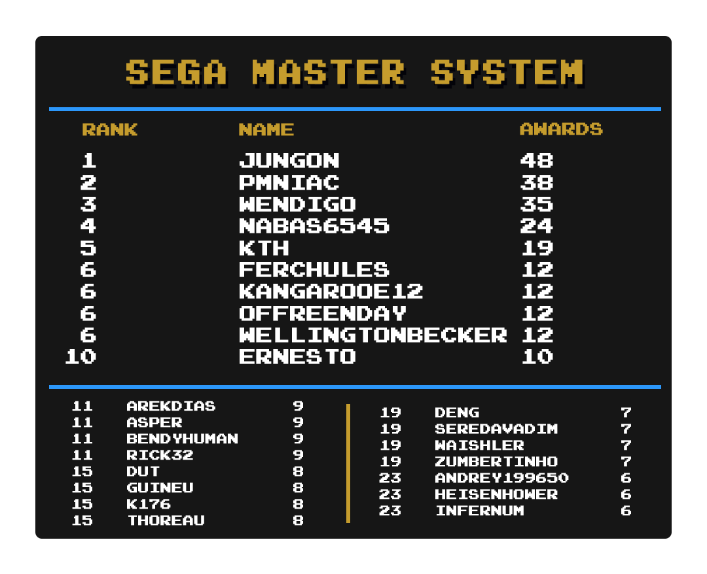
-
Jungon is extending their lead in 1st place with 2 new mastery awards this month.
-
 WellingtonBecker has made it into the top 25 and is sitting in a 4-way tie for 6th place.
WellingtonBecker has made it into the top 25 and is sitting in a 4-way tie for 6th place.
Mega Drive
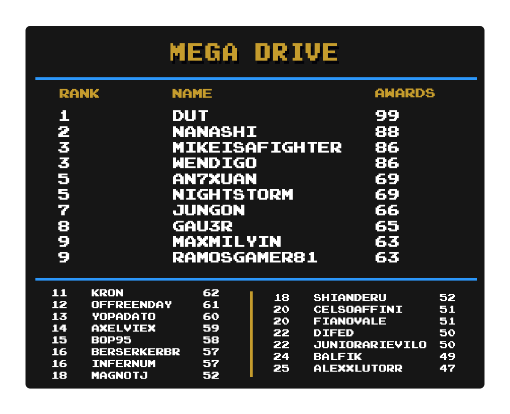
-
DUT continues to expand their lead in 1st place, now just 1 mastery award shy of hitting 100.
-
Wendigo is now tied with
 mikeisafighter in 3rd place with 5 new mastery awards this month.
mikeisafighter in 3rd place with 5 new mastery awards this month. -
 an7xuan and Nightstorm are tied in 5th place with 69 awards, nice.
an7xuan and Nightstorm are tied in 5th place with 69 awards, nice.
N64
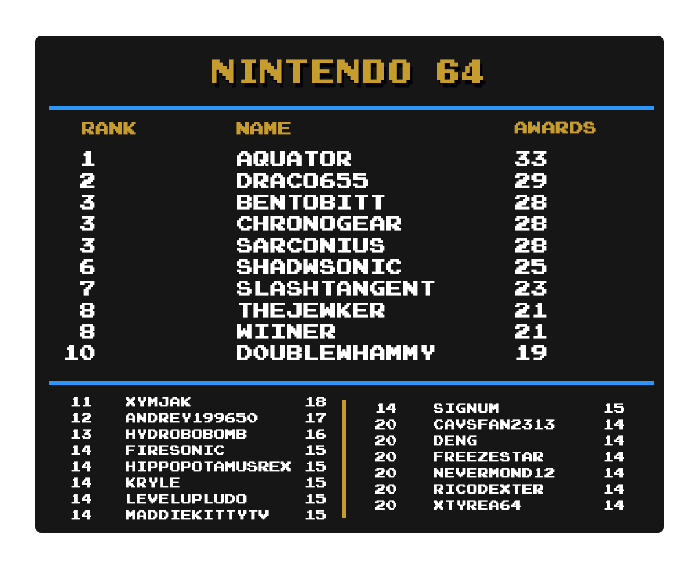
-
Aquator continues to hold onto the top spot.
-
 ChronoGear and Sarconius are now tied in 3rd place with
ChronoGear and Sarconius are now tied in 3rd place with  BenTobitt.
BenTobitt. -
 HippopotamusRex has made it into the top 25 and is sitting in a 6-way tie for 14th place.
HippopotamusRex has made it into the top 25 and is sitting in a 6-way tie for 14th place.
NES
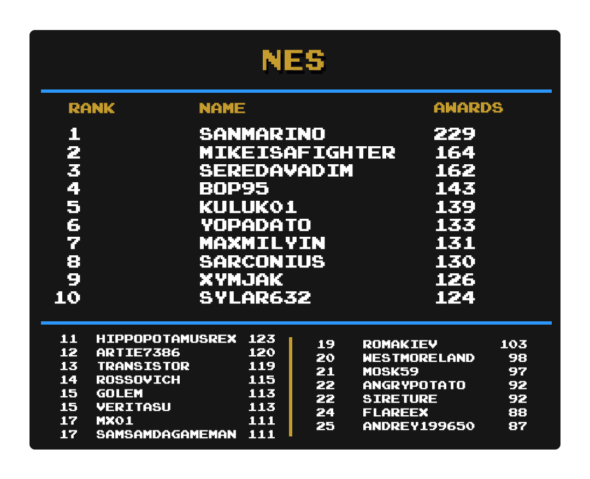
-
SanMarino extends their lead in 1st place with 5 new mastery awards this month.
-
 ZanderCheevos, not shown, has jumped up 39 spots into 31st place over the past 2 months with 20 new mastery awards this month and 81 total NES mastery awards. Will they make into next months top 25?
ZanderCheevos, not shown, has jumped up 39 spots into 31st place over the past 2 months with 20 new mastery awards this month and 81 total NES mastery awards. Will they make into next months top 25?
Nintendo DS
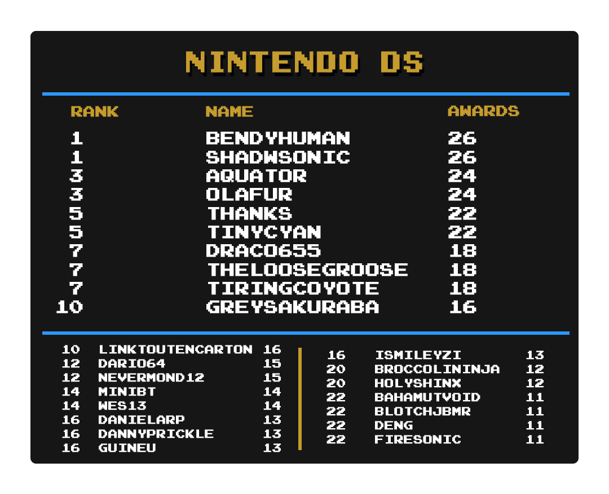
-
ShadwSonic is now tied with Bendyhuman for 1st place with 26 mastery awards.
-
 tinycyan has jumped into a tie for 5th place with 5 new mastery awards this month.
tinycyan has jumped into a tie for 5th place with 5 new mastery awards this month. - The top 6 spots are separated by only 4 mastery awards.
PC Engine
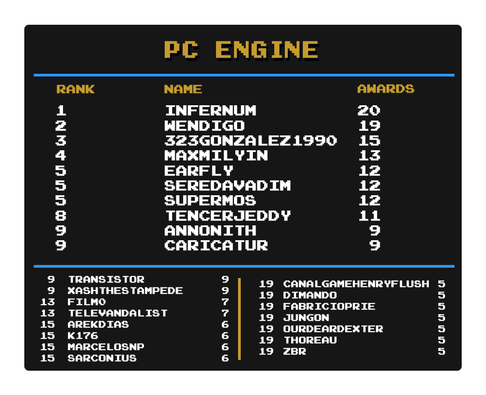
-
Infernum has taken over the top spot, going form 25th to 1st in a matter of 2 months.
-
 marcelosnp has made it into the top 25 and is sitting in a 4-way tie for 15th place.
marcelosnp has made it into the top 25 and is sitting in a 4-way tie for 15th place.
PlayStation
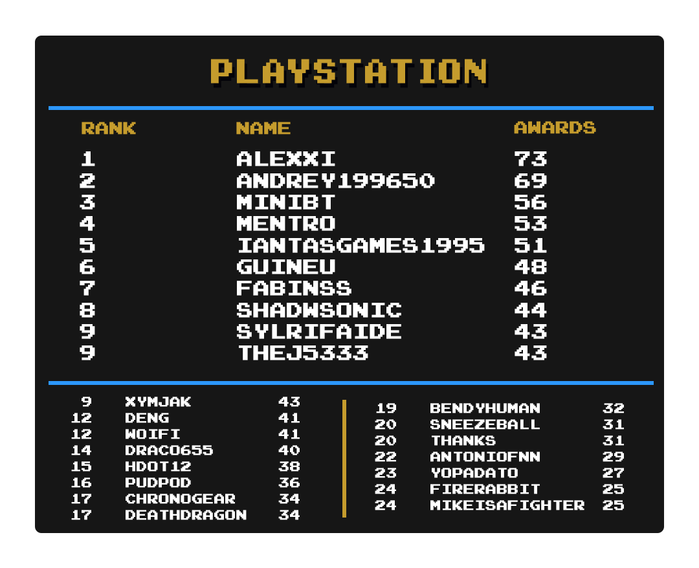
-
Alexxi extends their 1st place lead by 1 with 2 new mastery awards this month.
-
 Mentro moves into 4th place with 7 new mastery awards this month.
Mentro moves into 4th place with 7 new mastery awards this month.
PlayStation Portable
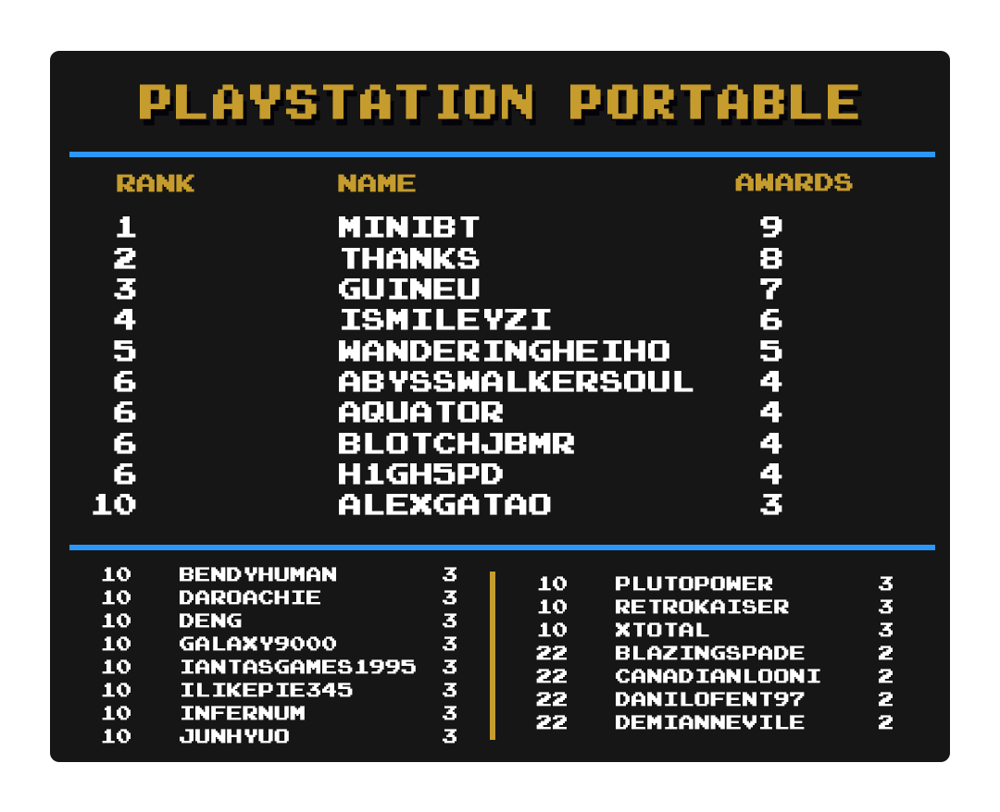
-
minibt,
 Thanks, and guineu take the top 3 spots on the first PSP mastery leaderboard.
Thanks, and guineu take the top 3 spots on the first PSP mastery leaderboard. - With over 50 users with at least 2 mastery awards, the tops spots are very likely to change every week.
Pokémon Mini
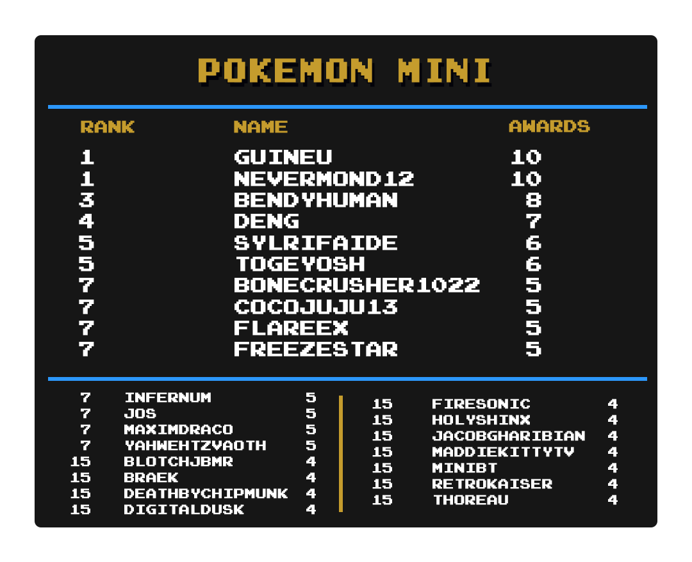
-
guineu & Nevermond12 are standing strong in the lead with 10 mastery awards each.
-
 FlareEX has made it into the top 25 and is sitting in an 8-way tie for 7th place.
FlareEX has made it into the top 25 and is sitting in an 8-way tie for 7th place. -
 deathbychipmunk has made it into the top 25 and is sitting in a 12-way tie for 15th place.
deathbychipmunk has made it into the top 25 and is sitting in a 12-way tie for 15th place.
Saturn
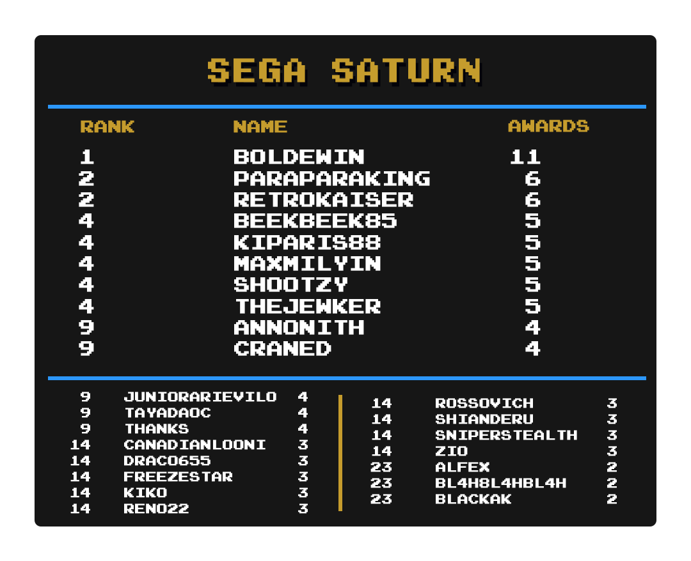
-
Boldewin still remains king with 11 mastery awards.
-
 Retrokaiser has jumped into a tie for 2nd with 1 new mastery award this month.
Retrokaiser has jumped into a tie for 2nd with 1 new mastery award this month. -
TheJewker has jumped into a 5-way tie for 4th place with 2 new mastery awards this month.
SNES
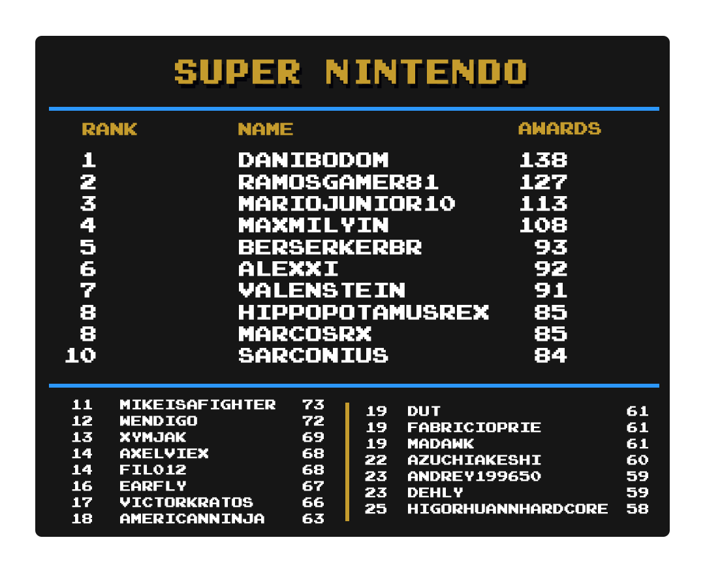
-
danibodom extends their 1st place lead by 5 with 7 new mastery awards this month.
-
Wendigo jumps up 3 spots into 12th place with 4 new mastery awards this month.
-
DUT jumps up 5 places into a 3-way tie for 19th place with 4 new mastery awards this month.
Watara Supervision
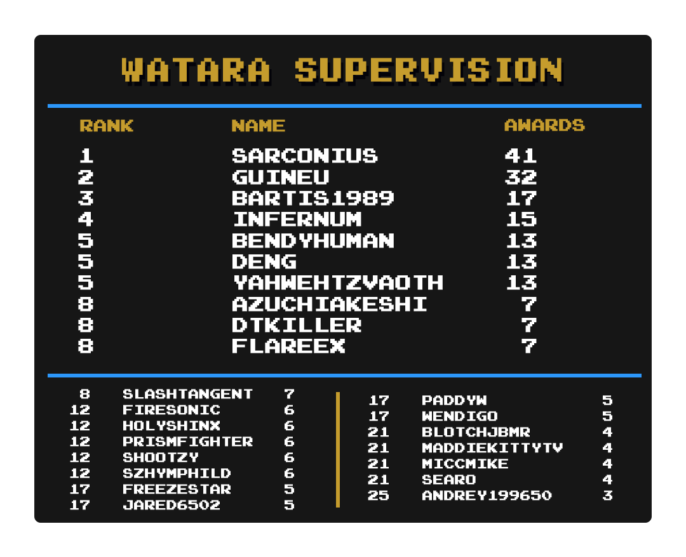
-
Sarconius still has a healthy lead at the 1st place spot.
-
Infernum has jumped into 4th place with 2 new mastery awards this month.
-
 prismfighter has made it into the top 25 and is sitting in a 4-way tie for 12th place.
prismfighter has made it into the top 25 and is sitting in a 4-way tie for 12th place.